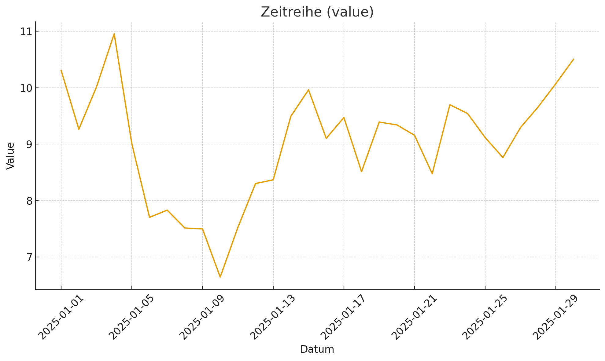
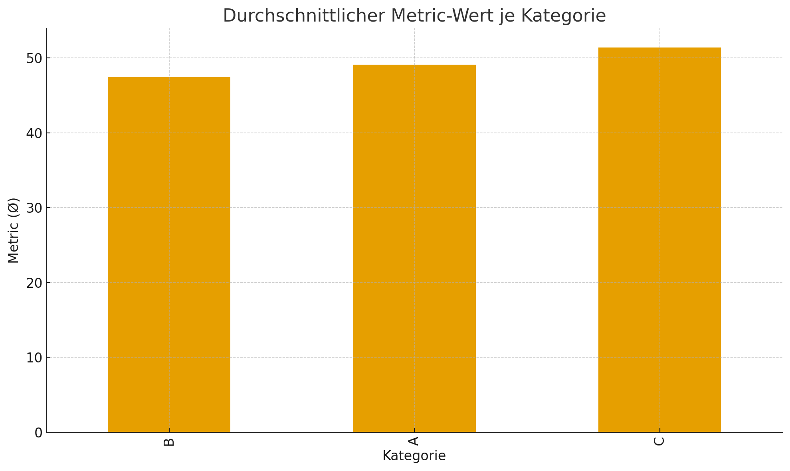
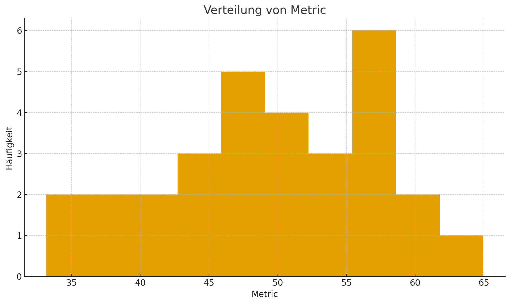

import matplotlib.pyplot as pltplt.figure()plt.plot(df["date"], df["value"])plt.title("Zeitreihe (value)")plt.xlabel("Datum")plt.ylabel("Value")plt.xticks(rotation=45)plt.tight_layout()

2 Balkendiagramm (Mittelwerte je Kategorie)
Code
means = df.groupby("category")["metric"].mean().sort_values()plt.figure()means.plot(kind="bar")plt.title("Durchschnittlicher Metric-Wert je Kategorie")plt.xlabel("Kategorie")plt.ylabel("Metric (Ø)")plt.tight_layout()

3 Histogramm der Metrik
Code
plt.figure()plt.hist(df["metric"], bins=10)plt.title("Verteilung von Metric")plt.xlabel("Metric")plt.ylabel("Häufigkeit")plt.tight_layout()

4 Snapshot-Funktion
Mit der folgenden Funktion können Sie manuell eine versionierte Kopie des Notebooks in notebooks/versions/ speichern. Führen Sie die Zelle aus, nachdem Sie das Notebook gespeichert haben.
Code
import os, shutil, datetime, jsondef save_snapshot(src_path="notebooks/test_analysis.ipynb", outdir="notebooks/versions", message="Snapshot aus Notebook"): os.makedirs(outdir, exist_ok=True)ifnot os.path.exists(src_path):print("Quelle nicht gefunden:", src_path)return ts = datetime.datetime.now().strftime("%Y%m%d-%H%M%S") base = os.path.splitext(os.path.basename(src_path))[0] dst = os.path.join(outdir, f"{base}_{ts}.ipynb") shutil.copyfile(src_path, dst) meta = {"timestamp": ts, "message": message}withopen(dst +".meta.json", "w", encoding="utf-8") as f: json.dump(meta, f, ensure_ascii=False, indent=2)print("Snapshot gespeichert:", dst)print("Aufruf: save_snapshot()")